RÉSUMÉ DES CARACTÉRISTIQUES DU PRODUIT
ANSM - Mis à jour le : 16/12/2009
1. DENOMINATION DU MEDICAMENT
JADELLE 2 x 75 mg, implant
2. COMPOSITION QUALITATIVE ET QUANTITATIVE
Lévonorgestrel ................................................................................................................................... 75 mg
Pour un implant.
Un conditionnement de JADELLE contient deux implants à insérer sous la peau.
Le lévonorgestrel est libéré à une vitesse d'environ 100 microgrammes par jour un mois après l'insertion; cette vitesse diminue ensuite à environ 40 microgrammes par jour dans l'année qui suit, à environ 30 microgrammes par jour dans les 3 ans et à environ 25 microgrammes par jour dans les 5 ans.
Pour la liste complète des excipients, voir rubrique 6.1.
3. FORME PHARMACEUTIQUE
Implant.
Les implants sont des bâtonnets souples, scellés, blancs ou blanc-cassé d'environ 43 mm de long et 2,5 mm de diamètre.
4. DONNEES CLINIQUES
4.1. Indications thérapeutiques
Contraception.
L'efficacité clinique et la sécurité d'emploi ont été établies chez les femmes âgées de 18 à 40 ans.
4.2. Posologie et mode d'administration
A utiliser par voie sous-cutanée. JADELLE est une méthode de contraception de longue durée (5 ans au maximum) (voir rubrique 4.4). L'utilisatrice devra être informée que les implants JADELLE peuvent être retirés à sa demande à tout moment.
JADELLE est fourni dans un conditionnement stérile contenant deux implants déjà placés dans un applicateur à usage unique. L'insertion et le retrait doivent de préférence être effectués par un professionnel de la santé entraîné et qui doit strictement respecter les instructions. Il faut insérer les implants avec un applicateur, juste sous la peau. Des strictes mesures d'asepsie doivent être respectées.
Les implants sont insérés à la face interne du bras gauche chez les femmes droitières et à la face interne du bras droit chez les gauchères, à environ 8 cm au dessus du pli du coude. Avant l'insertion, il faut nettoyer la peau avec un antiseptique et anesthésier la zone d'insertion. Effectuer une incision cutanée de 3 mm avec le scalpel fixé à l'étui qui protège l'applicateur. Les implants sont insérés sous la peau, à l'aide de l'applicateur, en les plaçant en forme de V ouvert en direction de l'épaule. Il importe d'insérer soigneusement les implants pour faciliter leur retrait ultérieur et diminuer la formation de cicatrices. Après l'insertion du deuxième implant, comprimer l'une sur l'autre les lèvres de l'incision, fermer la plaie avec un pansement et bander le bras.
|
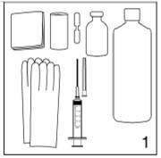
|
Figure 1
Pour insérer les implants JADELLE, il faut le matériel suivant:
· Une table pour allonger la patiente et une autre table ou un support pour son bras.
· Un plateau pour le matériel, des vêtements chirurgicaux stériles, des gants stériles et un désinfectant cutané.
· Un anesthésique local, une aiguille anesthésique (de 5 à 5,5 cm de long) et une seringue (2 - 5 ml).
· Un pansement adhésif, de la gaze et des compresses.
|
| |
Figure 2
|
|
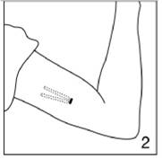
|
Demandez à la patiente de s'allonger sur la table d'examen et d'allonger son bras non dominant sur un linge stérile placé sur l'autre table, en formant un angle droit avec son corps. Nettoyez le bras de la patiente avec une solution antiseptique et recouvrez le bras d'un champ stérile fenêtré. Il faut insérer les implants à la face interne du bras à environ 6-8 cm au dessus du pli du coude. Insérez les implants sous la peau par l'intermédiaire d'une incision, en les disposant en forme de V étroit, comme l'indique la figure.
|
|
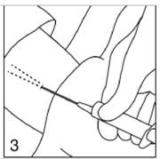
|
Figure 3
|
|
Remplissez la seringue avec environ 2 - 4 ml d'anesthésique local. Anesthésiez le site d'insertion en introduisant l'aiguille sous la peau sur une longueur d'environ 5 à 5,5 cm dans les directions où vous envisagez d'insérer les implants.
|
|

|
Figure 4
Cette figure représente les composants de l'applicateur.
|
|
Ouvrez la boîte de JADELLE. Sortez l'applicateur du corps du scalpel qui le protège. Veillez à ne pas faire tomber les implants qui se trouvent à l'intérieur de l'applicateur, prêts à l'emploi. Le piston est fourni séparément dans la boîte.
|
|
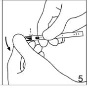
|
Figure 5
Faites pivoter le capuchon de la lame du scalpel pour le détacher.
|
|
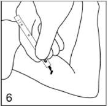
|
Figure 6
|
|
Avec le scalpel, faites une incision d'environ 3 mm à travers la peau de la face interne du bras, à environ 6 - 8 cm au dessus du pli du coude.
|
|
|
Figure 7
|
|
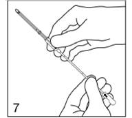
|
Prenez l'applicateur de telle façon que la flèche figurant sur le corps du dispositif soit dirigée vers le haut. Maintenez l'applicateur dans cette position pendant toute la durée de l'insertion.
Introduisez le piston dans l'extrémité épointée de l'applicateur, de façon à voir la flèche sur la tige du piston avec l'encoche de la tige dirigée vers la gauche. Enfoncez le piston aussi longtemps que cela est facile (sur environ 1 cm). Vous pouvez pousser les implants légèrement en avant.
|
|
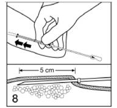
|
Figure 8
|
|
Les implants doivent être insérés juste sous la peau. Introduisez l'applicateur sous la peau, en passant par l'incision. Pour faciliter l'insertion sous-cutanée, vous pouvez décoller légèrement la peau avec l'applicateur comme l'indique la partie inférieure de la figure.
Poussez l'applicateur sous la peau jusqu'à l'anneau repère de ce dispositif. Ne forcez pas. Si vous percevez une résistance, essayez une autre direction.
|
|
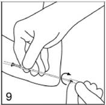
|
Figure 9
|
|
Une fois que l'applicateur est enfoncé jusqu'à l'anneau, tournez le piston d'un demi-tour. Veillez à ne pas pousser sur le piston. L'encoche de la tige du piston regarde alors vers la droite.
|
|
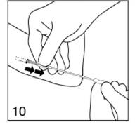
|
Figure 10
|
|
Libérez le premier implant en stabilisant le piston et en extrayant doucement l'applicateur hors de l'incision, jusqu'à ce que le piston bloque le mouvement. Si l'implant n'est pas libéré, vérifiez la position du piston. Si vous ne pouvez toujours pas libérer l'implant, arrêtez la procédure.
|
|
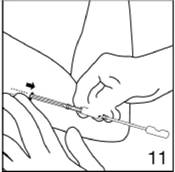
|
Figure 11
|
|
Tout en maintenant le premier implant en place avec vos doigts, retirez légèrement l'applicateur vers l'arrière jusqu'à ce que l'implant soit totalement libéré de l'applicateur. Toutefois, ne retirez pas l'applicateur.
|
|
|
Figure 12
|
|
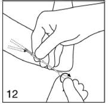
|
Introduisez l'applicateur sous la peau près du premier implant en allant jusqu'à l'anneau, comme l'indique la figure 8, en plaçant les deux implants en forme de V étroit. Tournez à nouveau le piston d'un demi-tour, mais sans pousser dessus. Libérez le deuxième implant comme le premier. Retirez l'applicateur.
|
|
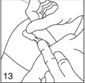
|
Figure 13
|
|
Après l'insertion, comprimez les bords de l'incision l'un sur l'autre et fermez l'incision par un pansement en papillon.
|
|
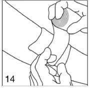
|
Figure 14
|
|
Recouvrez le site d'insertion avec des compresses et bandez bien le bras avec de la gaze pour assurer l'hémostase. Gardez la patiente en observation pendant quelques minutes avant de la laisser partir.
|
|
Jetez l'applicateur et le corps du scalpel selon des modalités appropriées.
|
Conseillez à la patiente de ne pas mouiller le site d'insertion pendant trois jours et remettez-lui un exemplaire de la note d'information destinée aux patientes, après avoir inscrit la date d'insertion et la date de la première consultation de contrôle. La gaze et le bandage peuvent être retirés dès que l'incision a cicatrisé, ce qui prend généralement 3 à 5 jours.
Début de l'utilisation des implants JADELLE
Absence de contraception hormonale au cours du mois précédent
Il faut insérer JADELLE dans les 7 jours suivant le début des règles. En cas d'insertion des implants à tout autre moment, il faut exclure formellement une éventuelle grossesse avant l'insertion et utiliser une méthode contraceptive complémentaire, non hormonale, pendant au moins 7 jours après l'insertion.
Relais d'un contraceptif oral combiné
Il est recommandé d'implanter JADELLE le lendemain de la prise du dernier comprimé actif du contraceptif oral combiné antérieur mais pas après le jour suivant le 7e jour sans prise de comprimé ou la prise du dernier comprimé placebo.
Relais d'un autre contraceptif purement progestatif (minipilule, injection, implant)
Dans le cas d'une minipilule le relais peut être effectué à n'importe quelle date. Dans le cas d'un autre implant, JADELLE peut être implanté le jour même du retrait du précédent implant. En cas de contraception par injection, l'implantation de JADELLE aura lieu à la date prévue de l'injection suivante.
Utilisation après un avortement survenu au cours du premier trimestre de la grossesse
JADELLE peut être inséré immédiatement. Dans ce cas, aucune mesure contraceptive supplémentaire n'est nécessaire.
Utilisation après un accouchement ou un avortement survenu pendant le deuxième trimestre de la grossesse
Chez les femmes qui n'allaitent pas, on peut implanter JADELLE immédiatement après l'accouchement ou après un avortement survenu pendant le deuxième trimestre. Si l'insertion est effectuée plus de 21 jours après l'accouchement, il faut exclure formellement une éventuelle grossesse et utiliser une méthode contraceptive complémentaire, non hormonale, pendant au moins 7 jours après l'insertion.
Chez les femmes qui allaitent, il faut attendre au moins 6 semaines après l'accouchement avant d'insérer JADELLE.
Retrait de JADELLE
On peut retirer les implants JADELLE à tout moment pour des raisons médicales ou personnelles mais il faut toujours les retirer au plus tard au bout de 5 ans. Le retrait peut être effectué à n'importe quel moment du cycle menstruel. L'effet contraceptif disparaît presque immédiatement et il faut adopter une autre méthode contraceptive, sauf si la femme souhaite une grossesse. Lors du retrait de l'implant, nettoyer tout d'abord la peau puis infiltrer un anesthésique local sous les extrémités de l'implant. Effectuer une incision cutanée de 4 mm avec un scalpel sous l'extrémité inférieure du V. Retirer les implants à l'aide d'une petite pince (par exemple Mosquito). Il faut retirer les implants très doucement. Le retrait prend plus de temps que l'insertion. Les implants risquent de se couder, d'être coupés ou de se casser pendant le retrait. Si le retrait s'avère difficile ou si les deux implants ne peuvent pas être retirés, il faut demander à la patiente de revenir en consultation après la cicatrisation de la zone de retrait. Il faut utiliser une méthode contraceptive non hormonale jusqu'au retrait complet des deux implants. Si la patiente souhaite continuer à utiliser cette méthode, on peut insérer deux nouveaux implants JADELLE en passant par la même incision, en les plaçant dans la même direction ou dans la direction opposée.
|
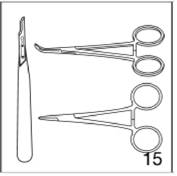
|
Figure 15
En plus du matériel nécessaire pour l'insertion, il vous faut le matériel suivant pour le retrait:
· un scalpel,
· des pinces de deux modèles différents (Mosquito et Crile).
|
| 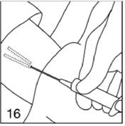 |
Figure 16
|
|
Localisez les implants par palpation et marquez leur position avec un feutre. Si les implants ne sont pas palpables, il est possible de les localiser par échographie ou radiographie des tissus mous. Injectez une petite quantité d'anesthésique local sous les extrémités rapprochées des implants. L'injection de l'anesthésique au-dessus des implants risque de masquer leur position et de rendre le retrait plus difficile. Si nécessaire, vous pouvez utiliser plus d'anesthésique, en procédant par petites quantités à chaque fois.
|
|
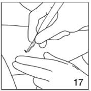
|
Figure 17
|
|
A l'aide du scalpel, faites une incision de 4 mm près des extrémités des implants. N'élargissez pas l'incision.
|
|
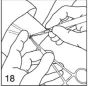
|
Figure 18
|
|
Poussez doucement chaque implant vers l'incision, avec les doigts. Une fois que l'extrémité est visible dans l'incision, saisissez-la avec la pince Mosquito. Utilisez un scalpel, une pince ou une compresse pour ouvrir très délicatement la capsule tissulaire qui entoure l'implant.
|
|
|
Figure 19
|
|
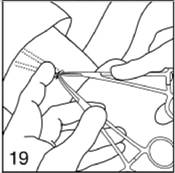
|
Saisissez l'extrémité de l'implant avec la deuxième pince (Crile) et retirez la première pince.
|
|

|
Figure 20
|
|
Retirez doucement l'implant. Répétez la procédure pour le deuxième implant.
|
A la fin de la procédure, refermez l'incision et bandez-la comme après l'insertion. La patiente doit garder son bras au sec pendant quelques jours.
Mesurez la longueur des implants retirés pour vérifier qu'il s'agissait bien de deux implants JADELLE et non pas d'autres implants contraceptifs. La longueur doit être de 43 mm.
Si la patiente souhaite continuer à utiliser la méthode, vous pouvez insérer un nouveau jeu d'implants JADELLE en passant par la même incision, dans la même direction ou dans la direction opposée.
Après le retrait, une grossesse est possible à tout moment.
4.3. Contre-indications
· Hypersensibilité au lévonorgestrel ou à tout autre composant de JADELLE.
· Hémorragie vaginale anormale non diagnostiquée.
· Suspicion ou diagnostic de cancer hormonodépendant.
· Affection hépatique aiguë.
· Tumeur hépatique bénigne ou maligne.
· Maladie thromboembolique
4.4. Mises en garde spéciales et précautions d'emploi
Mises en garde spéciales
Les essais cliniques montrent que l'efficacité contraceptive des implants JADELLE diminue au-delà de la quatrième année d'utilisation. En conséquence, il faut envisager le retrait des implants JADELLE et leur remplacement par de nouveaux implants au bout de 4 ans d'utilisation, surtout chez les femmes qui pèsent plus de 60 kilos (voir rubrique 5.1).
La concentration sérique de lévonorgestrel est plus faible à la fin de la période d'utilisation des implants et est inversement proportionnelle au poids de la patiente.
Les essais cliniques menés avec JADELLE ont montré des altérations des concentrations sériques de lipoprotéines. Des diminutions statistiquement significatives des taux de cholestérol total, de HDL (lipoprotéines de haute densité), de LDL (lipoprotéines de basse densité) et de triglycérides ont été constatées, mais toutes les valeurs moyennes sont restées dans les limites de la normale. La signification clinique de ces modifications à long terme n'a pas été évaluée.
Les effets de JADELLE sur les facteurs de la coagulation sont variables. En présence d'antécédents thromboemboliques, il ne faut utiliser JADELLE que si les autres méthodes contraceptives ne conviennent pas et après avoir soigneusement évalué le rapport bénéfice/risque. Des effets indésirables thromboemboliques et cardiovasculaires chez des femmes utilisant d'autres implants de lévonorgestrel ont été rapportés. Des cas d'accident vasculaire cérébral, d'infarctus du myocarde, d'embolie pulmonaire et de thrombose veineuse profonde ont été rapportés chez des femmes utilisant d'autres implants de lévonorgestrel, de même que chez des femmes utilisant toute méthode contraceptive hormonale, mais le lien de causalité avec la méthode contraceptive n'est pas établi. S'il apparaît une maladie thrombotique ou embolique, il faut retirer les implants JADELLE (voir aussi « Interventions chirurgicales majeures et mineures »). Les thrombophlébites et phlébites superficielles ont été plus fréquentes sur le bras où ont été insérés les implants. Certains cas ont été observés après un traumatisme du bras.
Il faut être particulièrement prudent lors de la prescription des implants JADELLE chez les femmes présentant des facteurs de risque connus ou une prédisposition quelconque aux maladies artérielles ou veineuses.
Si une femme a des antécédents de migraine focale ou de migraine «crescendo » ou si de tels troubles apparaissent ou s'aggravent pendant l'utilisation de JADELLE, il faut soigneusement évaluer la situation.
S'il apparaît des modifications de la vision ou de la tolérance des lentilles de contact, il faut adresser la patiente à un ophtalmologiste. Il peut s'avérer nécessaire de suspendre provisoirement ou définitivement le port des lentilles de contact.
Certaines études ont montré une modification de la tolérance au glucose et de la sensibilité à l'insuline lors de tests de tolérance glycémique par voie orale, chez des femmes utilisant JADELLE. Bien que la signification clinique de ces observations soit inconnue, il faut soigneusement surveiller les femmes diabétiques qui utilisent JADELLE. Une prise de poids est possible lors de l'utilisation de JADELLE.
Si une hépatite ou un ictère cholestatique survient sous traitement par JADELLE, il faut retirer les implants. Une augmentation transitoire, discrète ou modérée, de la bilirubinémie totale est courante lors de l'instauration de ce traitement. Un léger accroissement du risque de cholélithiase a été signalé lors de l'utilisation d'autres implants de même type contenant du lévonorgestrel. En cas de perturbation de la fonction hépatique, le métabolisme du lévonorgestrel peut être plus lent que normalement.
Il faut également envisager le retrait de JADELLE s'il apparaît une dépression significative, car ce symptôme peut être d'origine hormonale. Il faut étroitement surveiller les femmes qui ont des antécédents dépressifs et envisager le retrait de JADELLE s'il apparaît des symptômes nets.
Les stéroïdes contraceptifs peuvent provoquer une certaine rétention liquidienne, ce qui peut entraîner une prise de poids. Il faut prescrire JADELLE avec prudence dans les situations susceptibles d'être aggravées par une rétention liquidienne et surveiller étroitement ces patientes pendant l'utilisation de JADELLE.
Chez des femmes utilisant d'autres implants de lévonorgestrel, on a signalé de rares cas d'hypertension intracrânienne bénigne. Il faut envisager ce diagnostic s'il apparaît des céphalées et/ou des troubles visuels persistants chez une femme utilisant JADELLE, surtout en cas d'obésité ou de prise de poids récente. Si une hypertension intracrânienne idiopathique est diagnostiquée, il faut retirer JADELLE.
Chez la plupart des femmes, les implants JADELLE modifient les caractéristiques des règles. Des hémorragies irrégulières, prolongées et intermenstruelles, un spotting et une aménorrhée ont été rapportés. En général, ces irrégularités diminuent pendant le traitement. Les pertes sanguines importantes aboutissant à une anémie sont rares et les concentrations moyennes d'hémoglobine augmentent habituellement légèrement chez les femmes qui utilisent JADELLE.
Etant donné que certaines femmes présentent des périodes d'aménorrhée pendant l'utilisation de JADELLE, il ne faut pas diagnostiquer une grossesse sur la seule base d'une aménorrhée. Toute suspicion de grossesse exige un test de grossesse. Une aménorrhée de six semaines ou plus après une phase de règles normales peut indiquer une grossesse. En cas de grossesse, il faut retirer les implants.
Les grossesses ectopiques sont rares pendant l'utilisation des implants de lévonorgestrel: moins de 1 pour 1000 années-femmes. Si une femme utilisant JADELLE présente une douleur abdominale basse ou s'avère enceinte, il faut l'examiner pour exclure une grossesse ectopique.
Pendant l'utilisation de JADELLE, des follicules se développent mais leur atrésie peut être retardée et ils peuvent atteindre des dimensions anormales. Chez la plupart des femmes, ces follicules hypertrophiques disparaissent spontanément. Toutefois, dans de rares cas, on peut noter une torsion ou une rupture, ce qui provoque des douleurs abdominales. Même s'il y a des symptômes, il faut prescrire un traitement purement conservateur, en excluant une grossesse ectopique. Une intervention chirurgicale est rarement nécessaire.
Quelques rares cas de maladies auto-immunes, notamment sclérodermie, lupus érythémateux disséminé (LED) ou polyarthrite rhumatoïde, ont été rapportés chez des femmes utilisant des implants de lévonorgestrel, mais le lien de causalité avec ce traitement n'a pas été établi. Aussi bien pendant la grossesse que lors de l'utilisation d'hormones sexuelles, les phénomènes suivants ont été observés, sans toutefois être liés de façon prouvée aux progestatifs: jaunisse et/ou prurit cholestatique, cholelithiase, syndrome hémolytique et urémique, herpes gestationis et perte auditive liée à une otosclérose.
Bien que le lien de causalité entre utilisation de contraceptifs oraux et cancer du sein ne soit pas formellement établi, une méta-analyse d'études épidémiologiques a montré une légère augmentation du risque relatif (RR = 1,24) de diagnostic de cancer du sein chez les femmes utilisant actuellement des contraceptifs oraux combinés (COC). Cette augmentation du risque disparaît progressivement pendant les 10 ans suivant l'arrêt de la prise de COC. Il se peut que le risque de diagnostic de cancer du sein chez les femmes utilisant des contraceptifs strictement progestatifs soit comparable à celui observé avec les COC.
Il n'est pas prouvé que l'utilisation de contraceptifs stéroïdiens augmente le risque de cancers gynécologiques. Il est néanmoins recommandé de surveiller cliniquement toutes les femmes qui utilisent JADELLE.
Pendant l'utilisation de JADELLE, il ne faut pas employer de préparations végétales contenant du millepertuis (Hypericum perforatum), car cela risquerait de diminuer les concentrations plasmatiques et les effets cliniques du lévonorgestrel (voir rubrique 4.5).
Précautions
Avant d'instaurer ou de reprendre le traitement, les antécédents médicaux et familiaux complets devront être relevés. La pression artérielle devra être mesurée et un examen clinique devra être pratiqué, en recherchant tout particulièrement s'il y a des contre-indications ou s'il faut respecter des précautions d'emploi. Il faut également dire à la patiente de lire soigneusement la notice, de suivre les instructions et de consulter son médecin en cas d'anomalie au site d'insertion. Il faut fixer la fréquence et la nature des examens en fonction des directives pratiques bien établies et les adapter cas par cas.
Il faut examiner le site d'insertion lors de chaque consultation de contrôle. S'il apparaît des hémorragies vaginales persistantes ou récidivantes d'origine indéterminée, il faut prendre les mesures appropriées pour exclure une tumeur maligne. La surveillance doit être particulièrement stricte pour les femmes qui ont des antécédents familiaux de cancer du sein ou qui présentent des nodules mammaires bénins ou une mastopathie.
Interventions chirurgicales majeures et mineures
Comme les implants JADELLE ne contiennent pas d'estrogène, leur usage, comme celui des autres contraceptifs similaires, peut généralement être poursuivi en cas d'opération. Toutefois, si le risque de thrombose est élevé, il faut envisager de prendre des mesures préventives appropriées.
En raison du risque de thromboembolie, le retrait des implants doit être envisagé en cas d'intervention chirurgicale ou d'immobilisation prolongée pour toute autre raison.
Instructions pour la patiente
La boîte contient une notice destinée à expliquer aux patientes les caractéristiques de JADELLE. Il faut remettre à toutes les patientes une copie de cette notice. Il faut soigneusement expliquer aux patientes les avantages et inconvénients de JADELLE, des autres méthodes contraceptives et de l'absence de contraception. Il faut en outre les informer sur l'insertion et le retrait des implants.
4.5. Interactions avec d'autres médicaments et autres formes d'interactions
Une réduction de l'efficacité contraceptive (c'est-à-dire la survenue de grossesses) a été rapportée chez des femmes utilisant d'autres implants de lévonorgestrel et recevant en même temps de la phénytoïne ou de la carbamazépine. Ces médicaments peuvent en effet accélérer le métabolisme du lévonorgestrel en induisant des enzymes hépatiques microsomiales. Il faut signaler aux utilisatrices de JADELLE que son efficacité contraceptive peut être atténuée en cas d'utilisation concomitante de médicaments inducteurs enzymatiques tels que ceux susmentionnés ou la rifampicine. Il faut utiliser des méthodes contraceptives supplémentaires non hormonales (de type mécanique) pendant la durée du traitement concomitant par ces produits et les autres inducteurs enzymatiques et pendant 4 semaines après la fin du traitement par des médicaments inducteurs enzymatiques. Pour les femmes recevant un traitement prolongé par des inducteurs des enzymes hépatiques, il faut envisager une autre méthode contraceptive.
Il ne faut pas utiliser de préparation végétale de millepertuis (Hypericum perforatum) pendant l'emploi de JADELLE car cela risquerait de compromettre l'effet contraceptif. Des hémorragies anormales et des grossesses non désirées ont été signalées pendant la prise de contraceptifs oraux. Cela s'explique par le fait que le millepertuis induit des enzymes responsables du métabolisme des médicaments. Cet effet inducteur peut persister au moins deux semaines après la fin du traitement par le millepertuis.
Les implants JADELLE peuvent avoir les effets suivants sur les résultats de certains examens biologiques d'ordre endocrinien:
1. diminution de la concentration de SHBG (« sex hormone binding globulin »)
2. diminution de la concentration sérique de thyroxine et augmentation des résultats du test de fixation de la triiodothyronine.
4.6. Grossesse et allaitement
Grossesse
En cas de grossesse survenant pendant le traitement par JADELLE, il faut retirer les implants. Des études animales ont montré que les doses très fortes de progestatifs pouvaient induire une virilisation des fœtus femelles. Des études épidémiologiques de grande ampleur montrent que le risque de malformation congénitale n'est pas augmenté chez les enfants dont la mère a utilisé des contraceptifs oraux contenant du lévonorgestrel avant la grossesse et que l'utilisation accidentelle de contraceptifs oraux pendant la grossesse n'a pas d'effet tératogène. On ignore si cela vaut également pour JADELLE.
Allaitement
Le lévonorgestrel passe dans le lait maternel, mais en quantités qui ne semblent pas affecter l'enfant. Les concentrations de lévonorgestrel atteintes lors de l'utilisation de JADELLE n'affectent ni la qualité ni la quantité du lait maternel. Chez les femmes qui allaitent, il est néanmoins conseillé de ne commencer à utiliser JADELLE que 6 semaines après l'accouchement.
4.7. Effets sur l'aptitude à conduire des véhicules et à utiliser des machines
On n'a pas observé d'effets sur l'aptitude à conduire des véhicules et à utiliser des machines.
4.8. Effets indésirables
Les effets indésirables suivants ont été signalés pendant les essais cliniques de JADELLE:
Effets indésirables très fréquents (survenant chez plus de 10 % des utilisatrices):
Céphalées, nervosité, sensations vertigineuses, nausées, modifications des règles (hémorragie menstruelle fréquente, irrégulière ou prolongée, spotting, aménorrhée), cervicite, écoulement vaginal, prurit génital, douleurs pelviennes, douleurs mammaires, prise de poids.
14 % des utilisatrices arrêtent JADELLE pour cause de modification du profil de saignements durant les 5 ans.
|
Système d'organes
|
Effets indésirables fréquents
> 1/100, < 1/10
|
Effets indésirables peu fréquents
> 1/1000, < 1/100
|
Effets indésirables rares
> 1/10000, < 1/1000
|
|
Psychiatrique
|
Altérations de l'humeur, dépression, modifications de la libido
|
|
|
|
Système nerveux
|
Migraine
|
|
|
|
Cœur
|
Palpitations, douleur thoracique
|
|
|
|
Appareil vasculaire
|
Hypertension, varices
|
|
|
|
Appareil respiratoire
|
Dyspnée
|
|
|
|
Appareil gastro-intestinal
|
Gêne abdominale
|
|
|
|
Appareil hépato-biliaire
|
Augmentation du taux sérique de bilirubine totale
|
|
|
|
Peau
|
Acné, dermatite de contact, alopécie, hypertrichose, rash, prurit, décoloration de la peau.
|
|
|
|
Appareil urinaire
|
Symptômes urinaires
|
|
|
|
Appareil génital et seins
|
Vaginite, kystes de l'ovaire, nodules mammaires bénins, écoulement mammaire
|
|
|
|
Troubles généraux et anomalies au site d'administration
|
Prurit au site d'insertion, douleur généralisée, fatigue, douleur dans le dos, perte de poids
|
Ecchymose au site d'insertion, infection au site d'implantation
|
Expulsion de l'implant, douleur, engourdissement, picotements au niveau du bras, cicatrices locales, difficultés pour retirer l'implant, lésion du nerf cubital liée au retrait de l'implant, hyperpigmentation du site de l'implantation.
|
L'expulsion d'un implant n'est pas fréquente mais peut se produire avant la cicatrisation du site d'insertion si les implants ont été placés très près de la surface de la peau ou trop près de l'incision ou encore en cas d'infection du site d'insertion. Tout implant expulsé doit être remplacé par un nouvel implant stérile.
Dans divers pays on a observé, rarement, des cloques, ulcérations et escarres localisées chez des femmes utilisant des implants similaires de lévonorgestrel.
On a signalé un léger déplacement d'implants similaires de lévonorgestrel, ce déplacement n'occasionnant le plus souvent qu'une modification minime de la position des implants. De rares cas de déplacement important (quelques centimètres ou plus) ont été signalés. Dans certains de ces cas, les femmes se plaignaient d'une douleur ou d'une gêne. En cas de déplacement, il peut s'avérer nécessaire de modifier la technique de retrait et d'augmenter le nombre d'incisions ou de consultations.
L'utilisation d'implants de lévonorgestrel de même type a été associée à de très rares cas d'hépatite cholestatique, de jaunisse, d'hyperbilirubinémie et de complications thromboemboliques. Voir aussi la rubrique 4.4.
4.9. Surdosage
Aucun cas connu de surdosage avec JADELLE.
5. PROPRIETES PHARMACOLOGIQUES
5.1. Propriétés pharmacodynamiques
Classe pharmacothérapeutique: PROGESTATIFS, Code ATC: G03AC03.
Le principe actif des implants JADELLE, le lévonorgestrel, est un progestatif de synthèse. Il est établi que le lévonorgestrel libéré par JADELLE a des effets variables sur la fonction ovarienne: soit absence d'activité folliculaire et lutéale, soit activité folliculaire normale mais activité lutéale déficiente, soit ovulation normale.
Le lévonorgestrel induit un épaississement de la glaire cervicale, interdisant ainsi la pénétration des spermatozoïdes dans l'utérus. Il freine également le développement de l'endomètre et peut empêcher l'implantation du blastocyste.
L'efficacité contraceptive de JADELLE a été évaluée dans des essais multicentriques menés auprès de 1393 femmes, pendant une durée de 4657 années-femmes. 525 femmes ont utilisé les implants pendant 5 ans. L'indice de Pearl a été de 0,17 pour 100 années-femmes (intervalle de confiance à 95 %: 0,04 - 0,30) pour l'ensemble des 5 ans. Pendant la 5ème année, il a été de 0,84 pour 100 années-femmes (intervalle de confiance à 95 %: 0,09 - 1,57). Le taux annuel de grossesses pour 100 utilisatrices a été de 0,1 ± 0,1 au bout d'un an, de deux ans et de trois ans, de 0,0 ± 0,0 au bout de 4 ans et de 0,8 ± 0,5 (ES) au bout de 5 ans. Une analyse en fonction du poids des patientes montre que le taux annuel de grossesses pendant la cinquième année pour 100 utilisatrices a été de 0,9 ± 0,9 pour les femmes de moins de 50 kg, de 0,5 ± 0,5 pour celles de 50 à 59 kg, de 1,1 ± 0,7 pour celles de 60 à 69 kg et de 1,1 ± 1,1 chez celles dont le poids dépassait 70 kg. Chez les femmes de plus de 60 kilos, le taux annuel de grossesses pour 100 utilisatrices a été de respectivement 0,2 ± 0,2, 0,2 ± 0,2, 0,3 ± 0,3, 0,0 ± 0,0 et 1,1 ± 0,6 au cours des première, deuxième, troisième, quatrième et cinquième années.
Après le retrait des implants, les femmes retrouvent rapidement leur fertilité normale. Quand les implants JADELLE ont été retirés en raison d'un désir de grossesse, une grossesse a débuté dans 45 % des cas dans les trois mois et dans 86 % des cas dans l'année suivant le retrait.
L'efficacité de JADELLE ne dépend pas de l'observance de la patiente.
5.2. Propriétés pharmacocinétiques
JADELLE contient un seul principe actif, un progestatif. Insérés sous la peau, ces implants ont un effet contraceptif fiable pendant la durée de vie prévue du produit, qui est de 5 ans.
Les implants libèrent directement du lévonorgestrel dans le liquide tissulaire. Les concentrations sériques maximales de lévonorgestrel, environ 772 pg/ml, sont atteintes 48 heures après l'insertion. Après la phase initiale, les concentrations de lévonorgestrel diminuent à 435 pg/ml en l'espace d'un mois, à 355 pg/ml en l'espace de 6 mois, à 341 pg/ml en l'espace d'un an et à 277 pg/ml en l'espace de 5 ans. Il existe une relation inverse entre les concentrations sériques de lévonorgestrel et le poids corporel. Ces concentrations sont environ deux fois plus élevées chez les femmes de 50 kg que chez les femmes de 70 kg. Toutefois, étant donné l'importante variabilité des concentrations sériques de lévonorgestrel et des réponses individuelles, les concentrations sériques ne permettent pas, à elles seules, de prévoir le risque de grossesse chez une femme donnée. Les concentrations sériques de lévonorgestrel sont nettement plus faibles sous traitement par les implants JADELLE que chez les femmes prenant des contraceptifs oraux contenant du lévonorgestrel.
Dans le sérum, le lévonorgestrel est essentiellement lié à la SHBG (« sex hormone binding globulin »). Le lévonorgestrel diminue les concentrations de SHBG en l'espace de quelques jours, ce qui diminue les concentrations sériques totales de lévonorgestrel. Les voies de la transformation métabolique du lévonorgestrel sont partiellement connues. L'une d'entre elles est une 16β-hydroxylation. Les concentrations des métabolites, en particulier les métabolites sulfoconjugués, sont plus élevées que celles de lévonorgestrel. La vitesse d'épuration métabolique présente une importante variabilité interindividuelle. On suppose que ce phénomène explique l'importante variabilité des concentrations sériques de lévonorgestrel d'une femme à l'autre. La demi-vie d'élimination du lévonorgestrel est de 13 à 18 heures. Le lévonorgestrel et ses métabolites sont essentiellement excrétés dans les urines (40 à 68 %) et à un moindre degré dans les selles (16 à 48 %). Après le retrait des implants, les concentrations sériques de lévonorgestrel diminuent en deçà du seuil de détection en l'espace de 5 à 14 jours.
5.3. Données de sécurité préclinique
Le profil de toxicité du lévonorgestrel est bien connu et n'indique aucun risque particulier pour la santé humaine, en dehors des éléments discutés dans d'autres paragraphes du présent RCP.
Les études de mutagénicité et de biocompatibilité n'ont révélé ni génotoxicité ni intolérance locale inacceptable imputable au lévonorgestrel ou aux composants polymériques inactifs de JADELLE.
6. DONNEES PHARMACEUTIQUES
6.1. Liste des excipients
Elastomères de silicone.
Silice colloïdale anhydre.
6.2. Incompatibilités
Sans objet.
6.3. Durée de conservation
3 ans.
6.4. Précautions particulières de conservation
Pas de précautions particulières de conservation.
6.5. Nature et contenu de l'emballage extérieur
Les implants sont placés dans un applicateur jetable (inserteur). L'applicateur, le corps du scalpel et le piston sont constitués d'un copolymère de téréphtalate de polyéthylène. La lame du scalpel est en acier inoxydable.
Le produit est placé dans une pochette thermoformée de téréphtalate de polyéthylène fermée par un film de polyéthylène non tissé enduit.
6.6. Précautions particulières d’élimination et de manipulation
Pour les modalités d'insertion et de retrait des implants, se référer à la rubrique 4.2. Des informations détaillées sur l'insertion et le retrait sont données dans une fiche séparée destinée aux médecins. L'applicateur est réservé à un usage unique et il faut le jeter conformément aux réglementations locales en matière de déchets biologiques dangereux.
7. TITULAIRE DE L’AUTORISATION DE MISE SUR LE MARCHE
BAYER SANTE
220 AVENUE DE LA RECHERCHE
59120 LOOS
8. NUMERO(S) D’AUTORISATION DE MISE SUR LE MARCHE
· 359 549-4: 2 implants avec applicateur (PET) sous plaquette thermoformée (PET/PE).
9. DATE DE PREMIERE AUTORISATION/DE RENOUVELLEMENT DE L’AUTORISATION
[à compléter par le titulaire]
10. DATE DE MISE A JOUR DU TEXTE
[à compléter par le titulaire]
11. DOSIMETRIE
Sans objet.
12. INSTRUCTIONS POUR LA PREPARATION DES RADIOPHARMACEUTIQUES
Sans objet.
Liste I.